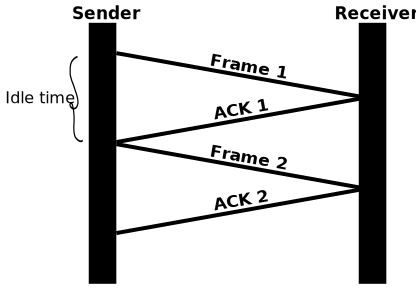
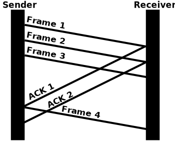
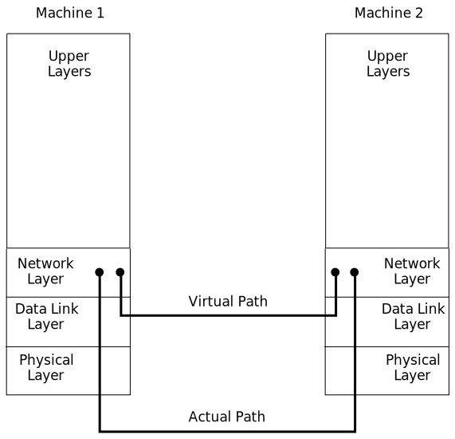
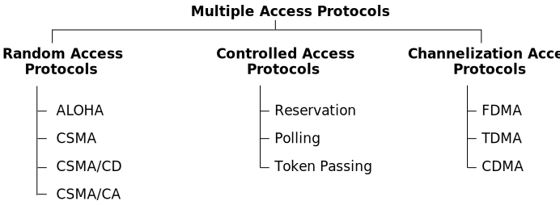

Data Link Layer
Data Link Layer
- The Data Link Layer serves a crucial role in computer networks by facilitating the transmission of
data between two devices or nodes.
- It is divided into two main parts: Data Link Control and Multiple Access Resolution/Protocol.
- Data Link Control: This upper layer is responsible for flow control and error
control within the data link layer. It ensures the reliable and orderly transfer of data between
connected devices.
- Multiple Access Resolution/Protocol: The lower sub-layer focuses on handling and
minimizing collisions or multiple access issues on a communication channel. It is often referred to
as Media Access Control (MAC) or Multiple Access Resolutions.
Main Aim of Data Link Layer:
- Transmitting data frames received from the network layer to the destination machine.
- Ensuring appropriate addressing and routing of data frames within the network layer of the
destination machine.
- Addressing the critical task of reliable and efficient data transfer between nodes in a network.
The Data Link Control (DLC) component ensures the integrity of data transmission by
managing flow control and error control. Flow control regulates the pace of data exchange between
devices to prevent overwhelming the receiving end. Error control mechanisms detect and correct errors
that may occur during transmission, ensuring the accuracy of the transmitted data.
The Media Access Control (MAC) or Multiple Access Resolutions component
of the Data Link Layer addresses challenges related to channel access. It handles and reduces
collisions, ensuring that multiple devices on the network can efficiently share the communication
channel without interference.
- The Data Link Layer operates at the second layer of the OSI model, providing a reliable link between
two directly connected nodes.
- Protocols within the Data Link Layer include Ethernet for local area networks (LANs) and
Point-to-Point Protocol (PPP) for point-to-point communication.
- Efficient data link layer protocols contribute to overall network performance, as they directly
impact the reliability and speed of data transmission.
- Data Link Layer protocols handle addressing, framing, and error detection, enhancing the overall
robustness of communication between devices.
Functions of the Data-link Layer
- The Data-link Layer serves various essential functions that contribute to the efficient and reliable
transmission of data in a computer network.
Framing
- Organizes data received from the Network layer into frames.
- Divides packets into smaller frames at the sender's side.
- Adds special bits for error control and addressing in the frame's header and end.
- Sends frames bit-by-bit to the Physical layer.
- Assembles bits received from the Physical layer into frames at the receiver's end.
Addressing
- Encapsulates the MAC address (physical address) of the source and destination in the header of
each frame.
- Ensures node-to-node delivery.
- The MAC address is a unique hardware identifier assigned to a device during manufacturing.
Error Control
- Responsible for error detection and correction during data transmission.
- Adds error detection bits to the frame's header.
- Enhances reliability by enabling the detection and retransmission of damaged or lost frames.
Flow Control
- Prevents overflow in the receiver's buffer.
- Synchronizes the sender's and receiver's speeds.
- Establishes flow control mechanisms to manage data transfer rates.
Access Control
- Ensures control in scenarios where multiple devices share a communication channel.
- Uses protocols like CSMA/CD and CSMA/CA to determine which device has access to the channel.
- Minimizes the risk of collisions and loss of frames.
Design Issues of Data Link Layer
The design issues of the Data Link Layer revolve around key challenges and considerations in ensuring
reliable and efficient communication between network devices. These issues include:
Services Provided to the Network Layer:
- The Data Link Layer must serve as a seamless interface to the Network Layer.
- Ensuring the transfer of data from the sending machine's network layer to the destination
machine's
network layer.
- Design Issue: The challenge is to design a seamless interface between the Data Link Layer and
the Network Layer, addressing issues related to data transfer, encapsulation, compatibility, and
accurate transmission.
Frame Synchronization:
- Identification of the starting and ending points of each frame sent from the source machine to
the
destination machine.
- Facilitating proper frame recognition and reception by the destination machine.
- Design Issue: The challenge is to design efficient mechanisms for frame synchronization,
accurately identifying the starting and ending points of each frame to ensure proper recognition
and reception by the destination machine.
Flow Control:
- Flow control means regulating the flow of data frames at the receiver end.
- It prevents the source machine from sending data frames at a rate faster than the destination
machine's capacity, avoiding overflow and frame loss.
- Design Issue: The challenge is to design effective flow control mechanisms to regulate data
frame flow at the receiver end, preventing issues like overflow and frame loss and optimizing
network performance.
- In this context, we have a few protocols like Stop-and-Wait and Sliding Window which help in
managing data flow efficiently.
Stop-and-Wait Protocol
- The Stop-and-Wait Protocol is a simple flow control mechanism used in the data link layer of
the OSI model. It is primarily designed to ensure reliable and sequential delivery of frames
between a sender and receiver over a communication link.
Basic Steps:
- Sender Side:
- The sender sends a frame to the receiver.
- Waits for an acknowledgment (ACK) from the receiver.
- Receiver Side:
- Receives the frame.
- Sends an acknowledgment (ACK) back to the sender.
- Sender Side (After ACK):
- If the ACK is received within a specified timeout period, the sender assumes
successful delivery and proceeds to send the next frame.
- If the ACK is not received within the timeout period, the sender retransmits the
same frame.

Issues and Limitations:
- Low Efficiency: Stop-and-Wait is not very efficient, especially in scenarios where there is
a significant delay between the sender and receiver. While waiting for an acknowledgment,
the sender is idle, leading to low utilization of the communication link.
- Limited Bandwidth Utilization: The sender cannot transmit a new frame until it receives an
acknowledgment for the previous one. This results in underutilization of the available
bandwidth.
- Increased Latency: The round-trip time (RTT) heavily influences the protocol's performance.
Higher RTT can lead to increased latency, affecting the overall throughput.
Sliding Window Protocol
- The Sliding Window Protocol is an advancement over the Stop-and-Wait Protocol, aiming to
improve the efficiency of data transfer in communication networks. It falls under the design
issues of the data link layer and specifically addresses flow control.
- In this protocol, idle time is reduced as multiple frames are sent at once.
Basic Steps:
- Sender Side:
- The sender maintains a window of allowed, but not yet acknowledged, frames.
- It sends multiple frames within the window before waiting for acknowledgments.
- Receiver Side:
- The receiver keeps track of the frames it has received in order.
- It sends cumulative acknowledgments, indicating the highest sequence number received
successfully.
- Sender Side (After ACK):
- As acknowledgments are received, the sender slides the window to send new frames.
- New frames are continuously sent within the updated window.
- Flow Control:
- The sender adjusts the window size dynamically based on network conditions and
available resources.

Error Control:
- Detecting and correcting errors introduced during the transmission of frames from the source to
the
destination machines.
- Preventing the duplication of frames and enhancing overall data transmission reliability.
- Design Issue: The challenge is to design effective flow control mechanisms to regulate data
frame flow at the receiver end, preventing issues like overflow and frame loss and optimizing
network performance.
Actual and Virtual Communication

Actual Communication
Actual communication involves the presence of a physical medium through which the Data Link
Layer transmits data frames. The actual communication path is as follows:
- From Network Layer to Data Link Layer to Physical Layer on the sending machine.
- Transmitted through the physical media.
- Received at the Physical Layer on the receiving machine.
- Processed through the Data Link Layer and delivered to the Network Layer.
This type of communication follows a tangible and physical transmission path.
Virtual Communication
- Virtual communication, on the other hand, occurs without the presence of a physical medium for
Data Link Layer to transmit data. It is a conceptual communication where the interaction between
two
Data Link Layers is visualized and imagined, facilitated by the use of a data link protocol.
- This mode of communication does not rely on a physical connection and is more abstract in
nature.
Types of Services provided by Data Link Layer
1. Unacknowledged Connectionless Service
- Unacknowledged connectionless service offers datagram-style delivery without error, flow
control, or acknowledgment.
- The source machine transmits independent frames to the destination machine without expecting
acknowledgment.
- No established connection exists between the source and destination machines before or after
data transfer.
- If a frame is lost due to noise in the Data Link Layer, there is no attempt to detect or recover
from the loss.
- Example: Ethernet.
2. Acknowledged Connectionless Service
- Acknowledged connectionless service ensures packet delivery is acknowledged, utilizing a
stop-and-wait protocol.
- Each transmitted frame is individually acknowledged, allowing the sender to determine whether
the data frames were received safely.
- No logical connection is established, and each frame is acknowledged individually.
- Users can send and request the return of data simultaneously, using a specific time period for
resending data frames if acknowledgment is not received within that time.
- More reliable than unacknowledged connectionless service; useful in unreliable channels like
wireless systems and Wi-Fi services.
3. Acknowledged Connection-Oriented Service
- In acknowledged connection-oriented service, a connection is first established between the
sender and receiver or source and destination before data transfer occurs.
- Data is then transmitted over this established connection.
- Each transmitted frame is assigned individual numbers to confirm and guarantee that each frame
is received only once and in the correct order.
Framing in Data Link Layer
- Frames are fundamental units of digital transmission in computer networks and telecommunications.
- Similar to photons in light energy, frames are used in Time Division Multiplexing.
- Framing is a function of the data link layer.
Framing Process:
- Point-to-point connection between two devices using a wire.
- Data is transmitted as a stream of bits and needs to be framed into discernible blocks.
- Framing organizes and controls the transmission of data.
Frame Structure:
- Data link layer technologies (Ethernet, token ring, frame relay) have distinct frame structures.
- Frames include headers with information like error-checking codes.
- The data link layer extracts the message, including sender's and receiver's addresses.
Advantages of Using Frames:
- Data is broken into recoverable chunks, facilitating easy corruption checks.
- Organized and controlled transmission ensures accurate and efficient data delivery.
Transparent Process:
- Dividing data into frames and reassembling it is transparent to the user.
- The data link layer seamlessly handles this process.
Importance in Protocol Design:
- Framing is crucial in designing data link layer protocols.
- It provides a structured approach to organize and control data transmission.
- Ensures accurate and efficient delivery of data.
Problems in Framing
Detecting Start of the Frame:
- Every station must detect the start of a frame.
- Detection is based on a special bit sequence known as Starting Frame Delimiter (SFD).
How Stations Detect a Frame:
- Stations use a sequential circuit to listen for the SFD pattern.
- If SFD is detected, the sequential circuit alerts the station.
- The station checks the destination address to accept or reject the frame.
Detecting End of Frame:
- Challenge: Determining when to stop reading the frame.
Handling Errors:
- Framing errors may occur due to noise or transmission errors.
- Utilizes error detection and correction mechanisms like cyclic redundancy check (CRC).
Framing Overhead:
- Every frame has a header and trailer containing control information.
- Includes source and destination addresses, error detection code, and protocol-related data.
- Results in overhead, reducing available bandwidth, especially for small-sized frames.
Framing Incompatibility:
- Different devices and protocols may use varying framing methods.
- Potential issues arise when a device with one framing method communicates with another using
a
different method.
Framing Synchronization:
- Stations need synchronization to avoid collisions and ensure reliable communication.
- Requires agreement on frame boundaries and timing, challenging in complex networks with
diverse
devices and traffic loads.
Framing Efficiency:
- Design goal: Minimize data overhead while maximizing available bandwidth.
- Inefficient framing methods can lead to lower network performance and higher latency.
Data Link Control and Multiple Access Protocol
- Data Link Control (DLC): A reliable channel for transmitting data over a dedicated link,
employing techniques like framing, error control, and flow control.
- Introduction to Multiple Access Protocol:
- When a sender and receiver have a dedicated link, DLC manages the channel effectively.
- In scenarios without a dedicated path, multiple stations share a common channel, leading to
simultaneous data transmission.
- Multiple Access Protocol:
- Becomes crucial in scenarios with no dedicated link, preventing collisions and crosstalk.
- Orchestrates the access of multiple stations to the channel, ensuring orderly and efficient
data transfer.
For instance, consider a classroom scenario where students represent small channels. When a teacher asks
a question, all students attempt to answer simultaneously, akin to transferring data concurrently. This
simultaneous response can lead to data overlap or loss. In this analogy, the teacher acts as the
multiple access protocol, managing the students to ensure a coherent and organized response.
Following are the types of multiple access protocol that is subdivided into the different
process as:

Random Access Protocol
- Overview: In this protocol, all stations have equal priority to send data over a channel.
Each station can independently transmit data frames without relying on or controlling other
stations. However, collisions may occur if multiple stations attempt to send data
simultaneously.
- Methods of Random-Access Protocols:
- Aloha: Designed for wireless LAN, allowing any station to transmit data when a
frame is available.
- CSMA (Carrier Sense Multiple Access): Stations listen to the channel before
transmitting to avoid collisions.
- CSMA/CD (Carrier Sense Multiple Access with Collision Detection): Detects
collisions during transmission and takes corrective actions.
- CSMA/CA (Carrier Sense Multiple Access with Collision Avoidance): Aims to avoid
collisions rather than detecting them.
Aloha Random Access Protocol
- Rules:
- Any station can transmit data at any time.
- No carrier sensing is required.
- Collision and data frames may be lost.
- Acknowledgment of frames exists.
- Requires retransmission after a random time.
- Pure Aloha:
- Data transmission without checking channel status.
- Retransmission occurs after a random backoff time if no acknowledgment.
- Total vulnerable time: 2 * Transmission time of a frame (Tfr).
- Maximum throughput: 18.4% (G = 1/2).
- Slotted Aloha:
- Channel divided into fixed time slots.
- Data frames can only be sent at the beginning of a slot.
- Retransmission in the next slot if unsuccessful.
- Maximum throughput: 37% (G = 1).
- Probability of successful transmission: S = G * e^(-2G).
- Total vulnerable time required: Tfr.
CSMA (Carrier Sense Multiple Access)
- CSMA is a media access protocol based on carrier sensing, where stations
sense the channel's status (idle or busy) before transmitting data. This reduces the
likelihood of collisions on the transmission medium.
- CSMA Access Modes:
- 1-Persistent: Nodes immediately send data if the channel is idle; otherwise,
they wait and broadcast unconditionally when the channel becomes idle.
- Non-Persistent: Nodes sense the channel before transmission; if inactive,
they immediately send data; otherwise, they wait for a random time and transmit when
the channel is idle.
- P-Persistent: A combination of 1-Persistent and Non-Persistent modes. Nodes
send a frame with a P probability if the channel is inactive; if not, they wait for
a random time and resume transmission.
- O-Persistent: Stations determine their turn based on superiority before
transmitting on the shared channel. If the channel is inactive, each station waits
for its turn to retransmit data.
CSMA/CD (Carrier Sense Multiple Access with Collision Detection)
- CSMA/CD is a network protocol that combines carrier sensing with collision
detection for transmitting data frames. It operates at the medium access control layer and
follows a specific sequence of actions.
- Protocol Steps:
- Senses the shared channel before broadcasting frames.
- If the channel is idle, transmits a frame to check for successful transmission.
- If the frame is successfully received, the station sends another frame.
- If a collision is detected, the station sends a jam/stop signal to terminate data
transmission.
- Waits for a random time before attempting to send a frame to the channel again.
CSMA/CA (Carrier Sense Multiple Access with Collision Avoidance)
- CSMA/CA is a network protocol that combines carrier sensing with collision
avoidance for the transmission of data frames. Operating at the medium access control layer,
it employs acknowledgment signals to ensure successful transmission and avoid collisions.
- Protocol Mechanism:
- When a data frame is sent to the channel, the station awaits acknowledgment to check
channel status.
- If the station receives a single acknowledgment (its own), the data frame is
successfully transmitted to the receiver.
- If two signals are received (its own and one indicating collision), a collision has
occurred in the shared channel.
- Collision Avoidance Methods:
- Interframe Space (IFS): The station waits for the channel to become idle. If
the channel is idle, it does not immediately send data but waits for a defined
Interframe Space (IFS) to prioritize station access.
- Contention Window: The total time is divided into different slots. When ready
to transmit, the station selects a random slot as wait time. If the channel is still
busy, it restarts the timer for sending data packets when the channel is inactive.
- Acknowledgment: The sender sends the data frame to the shared channel only if
acknowledgment is not received within a specified time.
Controlled Access Protocols
- Controlled Access Protocol is a method aimed at reducing data frame collisions
on a shared channel. In this method, each station collaborates to determine which station has
the right to send a data frame, preventing collisions and ensuring orderly data transmission.
- Controlled Access Protocol includes three types: Reservation,
Polling, and Token Passing.
Controlled Access Methods:
Reservation:
- In the reservation method, stations must make a reservation before sending
data.
- The timeline consists of a fixed-length Reservation Interval and a
variable-length Data Transmission Period.
- Each station is assigned a slot in the reservation interval, and if a
station
has data to send, it transmits a bit in its designated slot.
- After all slots are checked, stations know which others wish to transmit,
and
data is sent accordingly.
- Advantages:
- Predictable network performance with fixed time and rates.
- Priority settings for speedier access.
- Reduced contention for network resources.
- Quality of Service (QoS) support for different traffic types.
- Efficient use of bandwidth through multiplexing.
- Support for multimedia applications with guaranteed resources.
Polling:
- Polling is a controlled access method that resembles a roll-call process,
where a controller (primary station) sends messages to each node in sequence to grant
access.
- Operation:
- The controller sends a message to each node with the address of the selected node
for access.
- Nodes can only exchange data through the controller.
- Upon receiving the message, the addressed node responds and sends data if available;
otherwise, it sends a "poll reject" (NAK) message.
- Advantages:
- Fixed and predictable maximum/minimum access time and data rates on the channel.
- Maximum efficiency and bandwidth utilization.
- No slot is wasted in the polling process.
- Assignment of priority ensures faster access for some secondary stations.
- Disadvantages:
- Consumes more time due to the sequential polling process.
- Link sharing is biased as every station has an equal chance of winning in each
round.
- Some stations might run out of data to send, leading to inefficient use.
- An increase in turnaround time can result in a drop in data rates, especially under
low loads.
Token Passing
- Token Passing is a controlled access method where stations are logically
connected in a ring, and access to the network is governed by tokens.
- Operation:
- Stations are arranged in a ring, and a token, a special bit pattern or message,
circulates among them in a predefined order.
- In a Token Ring, the token moves from one station to the next in the ring. In Token
Bus, each station uses the bus to send the token to the next station.
- The token serves as permission to send. If a station has a queued frame, it can send
it upon receiving the token. Otherwise, it passes the token to the next station.
- After sending a frame, each station must wait for all N stations (including itself)
to send the token to their neighbors and N – 1 stations to send a frame, if they
have one.
- Advantages:
- Applicable with routers, cabling, and includes built-in debugging features like
protective relay and auto-reconfiguration.
- Provides good throughput under conditions of high load.
- Disadvantages:
- High cost compared to other methods.
- Topology components are more expensive than those of more widely used standards.
- Hardware elements of token rings are intricate, requiring careful selection and
exclusive use from a single manufacturer.
Channelization Protocols
- Channelization Protocols enable the sharing of total usable bandwidth in a
shared channel among multiple stations, utilizing various methods based on time, distance, and
codes.
- Methods:
-
FDMA (Frequency Division Multiple Access):
FDMA divides the available bandwidth into equal bands, allowing multiple users to
send data through different frequencies to subchannels. Each station is reserved a
specific band to prevent crosstalk and interferences.
-
TDMA (Time Division Multiple Access):
TDMA shares the same frequency bandwidth across multiple stations by dividing the
channel into different time slots. This division helps avoid collisions, but there
is an overhead of synchronization, specifying each station's time slot with
synchronization bits.
-
CDMA (Code Division Multiple Access):
CDMA allows all stations to simultaneously send data over the same channel without
dividing the bandwidth based on time slots. Each station uses a unique code
sequence, enabling multiple stations to transmit data simultaneously without
interference. It doesn't require time slot division.